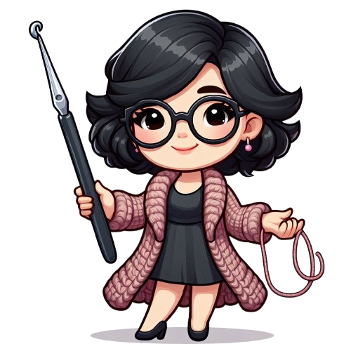

Fale comigo! 
Bem-vindos ao Crochê Pz, um espaço dedicado à arte de crochetar! Aqui, a criatividade se junta à paixão pelos fios, e você encontra padrões exclusivos, gráficos detalhados e tutoriais práticos para dar vida aos seus projetos.
Se você está aqui, é porque a magia do crochê te fisgou, certo? Seja para criar peças únicas e personalizadas ou montar peças mais populares, como fonte de renda, para relaxar ou até mesmo para presentear com amor, o crochê é uma arte que encanta e transforma.
E para te guiar nesse universo de possibilidades, preparei com muito carinho uma apostila de introdução ao Crochê Filé! Nela, você vai encontrar:
E o melhor de tudo: a apostila é totalmente gratuita!